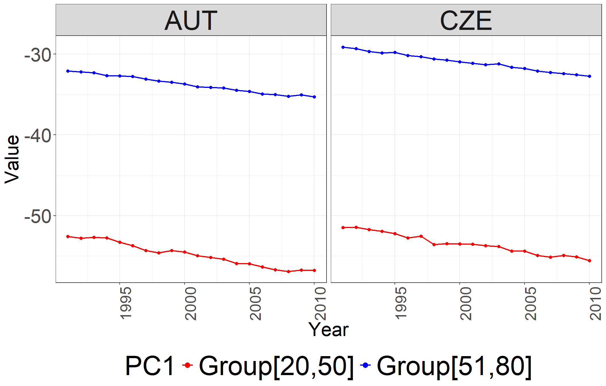
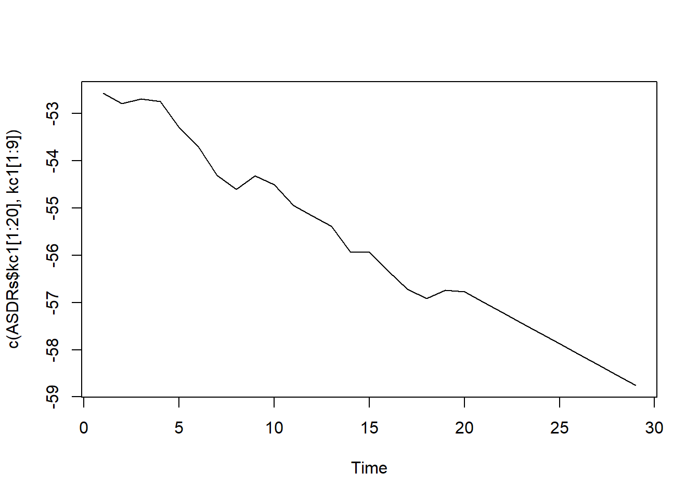

library(data.table) # Efficient data manipulation
library(dplyr) # Data manipulation and transformation
library(ggplot2) # Data visualization
library(HMDHFDplus) # Human Mortality Database-related functions
library(tidyverse) # Collection of tidyverse packages
library(forecast) # Time series forecasting
library(geepack) # Generalized Estimating Equation PackageForecasting Mortality Rates: Unveiling Patterns with a PCA-GEE Approach
Abstract
Principal Component Analysis (PCA) is a widely used technique in exploratory data analysis, visualization, and data preprocessing, leveraging the concept of variance to identify key dimensions in datasets. In this study, we focus on the first principal component, which represents the direction maximizing the variance of projected data. We extend the application of PCA by treating its first principal component as a covariate and integrating it with Generalized Estimating Equations (GEE) for analyzing age-specific death rates (ASDRs) in longitudinal datasets. GEE models are chosen for their robustness in handling correlated data, particularly suited for situations where traditional models assume independence among observations, which may not hold true in longitudinal data. We propose distinct GEE models tailored for single and multipopulation ASDRs, accommodating various correlation structures such as independence, AR(1), and exchangeable, thus offering a comprehensive evaluation of model efficiency. Our study critically evaluates the strengths and limitations of GEE models in mortality forecasting, providing empirical evidence through detailed model specifications and practical illustrations. We compare the forecast accuracy of our PCA-GEE approach with the Li-Lee and Lee-Carter models, demonstrating its superior predictive performance. Our findings contribute to an enhanced understanding of the nuanced capabilities of GEE models in mortality rate prediction, highlighting the potential of integrating PCA with GEE for improved forecasting accuracy and reliability.
Keywords: Mortality forecasting, Longitudinal analysis, Generalized estimating equations, Principal component analysis, Random walks with drift.
For more details, refer to the related paper: Forecasting Mortality Rates: Unveiling Patterns with a PCA-GEE Approach:
Affiliation
Department of Mathematics and Statistics, Masaryk University, Kotlářská 2, 611 37 Brno, Czech Republic
Load packages
First, load the packages to be used
Dataset
Importing the dataset containing log(q_{cgxt}) values for males and females from AUT (Austria) and CZE (Czech Republic)
List of Dataset Filenames
# log(q_{cgxt}) values for the years 1991 to 2019
load("dat.RData")
# log(q_{cgxt}) values for the years 1991 to 2010
load("dattrn.RData")M0 <- dat
# Combine matrices horizontally (column-bind) to form a single matrix (MB0)
MB0 <- do.call(cbind, M0)
# Initialize matrices for training set
M <- dattrn
MB <- do.call(cbind, M)Construction of ASDRs DataFrame for Training Set
# Initialize vectors for training set
t <- 20
# Initialize an empty list 'kcList' to store individual elements of kc
kcList <- list()
# Iterate through pairs of matrices in M
for (i in c(1,3)) {
# Extract matrices corresponding to the pairs
matrix1 <- M[[i]]
matrix2 <- M[[i + 1]]
# Combine the first 31 columns of each matrix, calculate PC1s, and replicate them 31 times
result1 <- rep(prcomp(cbind(matrix1[, 1:31], matrix2[, 1:31]),center = F,scale. = F)$x[,1], times = 31)
# Combine the last 30 columns of each matrix, calculate PC1s, and replicate them 30 times
result2 <- rep(prcomp(cbind(matrix1[, 32:61], matrix2[, 32:61]),center = F,scale. = F)$x[,1], times = 30)
# Repeat the results 2 times and append to kcList
kcList <- c(kcList, rep(c(result1,result2),2))
}
# Combine all elements in kcList into a single vector 'kc1'
kc1 <- unlist(kcList)
# Create a new vector 'kc2' by squaring each element in 'kc1'
kc2 <- kc1^2
yngold0 <- c("Group[20,50]","Group[51,80]")
yngold <- rep(c(rep("Group[20,50]",t*31),rep("Group[51,80]",t*30)),4)
gender<-rep(c("Female","Male"),each=t*61,times=2)
Country<-rep(c("AUT","CZE"),each=t*61*2)
year <- rep(1991:2010, times = 4*61)
age_levels <- factor(20:80)
age <- rep(20:80, each = t,times=4)
cohort <- year - age
# Combine results into data frame for training set
ASDRs <- data.frame(kc1,kc2, cohort, y = as.vector(MB),
age,gender,Country,year, yngold,
stringsAsFactors = FALSE)
# Convert factors to specified levels
ASDRs$age <- factor(ASDRs$age, levels = age_levels)
ASDRs$agenum<-as.numeric(ASDRs$age)
ASDRs$gender <- factor(ASDRs$gender, levels = c("Female","Male"))
ASDRs$Country <- factor(ASDRs$Country, levels = c("AUT","CZE"))
ASDRs$subject<-interaction(ASDRs$Country,ASDRs$gender,ASDRs$age)# Display the structure of the resulting data frame
str(ASDRs)'data.frame': 4880 obs. of 11 variables:
$ kc1 : num -52.6 -52.8 -52.7 -52.7 -53.3 ...
$ kc2 : num 2764 2786 2776 2782 2840 ...
$ cohort : int 1971 1972 1973 1974 1975 1976 1977 1978 1979 1980 ...
$ y : num -7.81 -7.59 -7.74 -7.84 -7.77 ...
$ age : Factor w/ 61 levels "20","21","22",..: 1 1 1 1 1 1 1 1 1 1 ...
$ gender : Factor w/ 2 levels "Female","Male": 1 1 1 1 1 1 1 1 1 1 ...
$ Country: Factor w/ 2 levels "AUT","CZE": 1 1 1 1 1 1 1 1 1 1 ...
$ year : int 1991 1992 1993 1994 1995 1996 1997 1998 1999 2000 ...
$ yngold : chr "Group[20,50]" "Group[20,50]" "Group[20,50]" "Group[20,50]" ...
$ agenum : num 1 1 1 1 1 1 1 1 1 1 ...
$ subject: Factor w/ 244 levels "AUT.Female.20",..: 1 1 1 1 1 1 1 1 1 1 ...# Display the first 20 rows of the resulting data frame
head(ASDRs,20) kc1 kc2 cohort y age gender Country year yngold
1 -52.57162 2763.775 1971 -7.814986 20 Female AUT 1991 Group[20,50]
2 -52.78710 2786.477 1972 -7.594639 20 Female AUT 1992 Group[20,50]
3 -52.69012 2776.249 1973 -7.741198 20 Female AUT 1993 Group[20,50]
4 -52.74255 2781.776 1974 -7.839658 20 Female AUT 1994 Group[20,50]
5 -53.28924 2839.744 1975 -7.768802 20 Female AUT 1995 Group[20,50]
6 -53.69821 2883.498 1976 -7.754846 20 Female AUT 1996 Group[20,50]
7 -54.31135 2949.723 1977 -8.144581 20 Female AUT 1997 Group[20,50]
8 -54.60185 2981.362 1978 -8.301918 20 Female AUT 1998 Group[20,50]
9 -54.32011 2950.674 1979 -8.071289 20 Female AUT 1999 Group[20,50]
10 -54.49995 2970.244 1980 -8.091795 20 Female AUT 2000 Group[20,50]
11 -54.94528 3018.984 1981 -8.087090 20 Female AUT 2001 Group[20,50]
12 -55.16273 3042.927 1982 -8.051818 20 Female AUT 2002 Group[20,50]
13 -55.38255 3067.227 1983 -8.112720 20 Female AUT 2003 Group[20,50]
14 -55.92122 3127.183 1984 -8.326655 20 Female AUT 2004 Group[20,50]
15 -55.93933 3129.208 1985 -8.417037 20 Female AUT 2005 Group[20,50]
16 -56.32996 3173.064 1986 -7.806460 20 Female AUT 2006 Group[20,50]
17 -56.71420 3216.500 1987 -8.095340 20 Female AUT 2007 Group[20,50]
18 -56.91176 3238.948 1988 -8.333911 20 Female AUT 2008 Group[20,50]
19 -56.74215 3219.672 1989 -8.262198 20 Female AUT 2009 Group[20,50]
20 -56.76776 3222.579 1990 -8.120577 20 Female AUT 2010 Group[20,50]
agenum subject
1 1 AUT.Female.20
2 1 AUT.Female.20
3 1 AUT.Female.20
4 1 AUT.Female.20
5 1 AUT.Female.20
6 1 AUT.Female.20
7 1 AUT.Female.20
8 1 AUT.Female.20
9 1 AUT.Female.20
10 1 AUT.Female.20
11 1 AUT.Female.20
12 1 AUT.Female.20
13 1 AUT.Female.20
14 1 AUT.Female.20
15 1 AUT.Female.20
16 1 AUT.Female.20
17 1 AUT.Female.20
18 1 AUT.Female.20
19 1 AUT.Female.20
20 1 AUT.Female.20Plot of \(k_{ct}\)
# Create a new data frame ASDRsnw with adjusted Age and year columns
ASDRsnw <- ASDRs %>%
mutate(year = as.numeric(as.character(year)))
head(ASDRsnw) kc1 kc2 cohort y age gender Country year yngold
1 -52.57162 2763.775 1971 -7.814986 20 Female AUT 1991 Group[20,50]
2 -52.78710 2786.477 1972 -7.594639 20 Female AUT 1992 Group[20,50]
3 -52.69012 2776.249 1973 -7.741198 20 Female AUT 1993 Group[20,50]
4 -52.74255 2781.776 1974 -7.839658 20 Female AUT 1994 Group[20,50]
5 -53.28924 2839.744 1975 -7.768802 20 Female AUT 1995 Group[20,50]
6 -53.69821 2883.498 1976 -7.754846 20 Female AUT 1996 Group[20,50]
agenum subject
1 1 AUT.Female.20
2 1 AUT.Female.20
3 1 AUT.Female.20
4 1 AUT.Female.20
5 1 AUT.Female.20
6 1 AUT.Female.20colnames(ASDRsnw)[9]<-"PC1"
ggplot(ASDRsnw) +
geom_point(aes(x=year,y=kc1,color=PC1),size=1.6)+
geom_line(aes(x=year,y=kc1,color=PC1),linewidth=.8)+
scale_color_manual(values = c("Group[20,50]" = "red","Group[51,80]"="blue"))+
xlab("Year") + ylab("Value")+ facet_grid(~Country)+
theme_bw()+guides(color = guide_legend(override.aes = list(size =3)))+
theme(axis.text.x = element_text(angle=90, hjust=1))+
theme(axis.text.x = element_text(size = 20))+
theme(axis.text.y = element_text(size = 25))+
theme(legend.text = element_text(size = 35)) +
theme(axis.title = element_text(size = 25)) +
theme(strip.text = element_text(size = 35))+
theme(legend.title=element_text(size=35))+
theme(legend.position="bottom")
Fitting Three GEE Models using the geeglm Function
# Fit GEE model with independence correlation structure
geeInd <- geeglm(y ~ Country+gender+age+
gender:age:kc1+
gender:age:kc2+
cohort,
data = ASDRs,id=subject ,
waves = year, corstr ="independence",
weights = agenum/mean(agenum))
# geeInd
# coef(geeInd)
# vcov(geeInd)
# summary(geeInd)
# coef(summary(geeInd))
anova(geeInd)Analysis of 'Wald statistic' Table
Model: gaussian, link: identity
Response: y
Terms added sequentially (first to last)
Df X2 P(>|Chi|)
Country 1 3 0.07455 .
gender 1 16 8.088e-05 ***
age 60 78159 < 2.2e-16 ***
cohort 1 5485 < 2.2e-16 ***
gender:age:kc1 122 4986 < 2.2e-16 ***
gender:age:kc2 122 59335 < 2.2e-16 ***
---
Signif. codes: 0 '***' 0.001 '**' 0.01 '*' 0.05 '.' 0.1 ' ' 1# Fit GEE model with exchangeable correlation structure
geeEx<-geeglm(y ~ Country+gender+age+
gender:age:kc1+
gender:age:kc2+
cohort,
data = ASDRs,id=subject ,
waves = year, corstr ="exchangeable",
weights = agenum/mean(agenum))
# geeEx
# coef(geeEx)
# vcov(geeEx)
# summary(geeEx)
# coef(summary(geeEx))
anova(geeEx)Analysis of 'Wald statistic' Table
Model: gaussian, link: identity
Response: y
Terms added sequentially (first to last)
Df X2 P(>|Chi|)
Country 1 3 0.07455 .
gender 1 16 8.088e-05 ***
age 60 78159 < 2.2e-16 ***
cohort 1 5485 < 2.2e-16 ***
gender:age:kc1 122 4251 < 2.2e-16 ***
gender:age:kc2 122 20730 < 2.2e-16 ***
---
Signif. codes: 0 '***' 0.001 '**' 0.01 '*' 0.05 '.' 0.1 ' ' 1# Fit GEE model with AR(1) correlation structure
geeAr1<-geeglm(y ~ Country+gender+age+
gender:age:kc1+
gender:age:kc2+
cohort,
data = ASDRs,id=subject ,
waves = year, corstr ="ar1",
weights = agenum/mean(agenum))
# geeAr1
# coef(geeAr1)
# vcov(geeAr1)
# summary(geeAr1)
# coef(summary(geeAr1))
anova(geeAr1)Analysis of 'Wald statistic' Table
Model: gaussian, link: identity
Response: y
Terms added sequentially (first to last)
Df X2 P(>|Chi|)
Country 1 3 0.07654 .
gender 1 16 6.832e-05 ***
age 60 78155 < 2.2e-16 ***
cohort 1 4353 < 2.2e-16 ***
gender:age:kc1 122 5589 < 2.2e-16 ***
gender:age:kc2 122 70307 < 2.2e-16 ***
---
Signif. codes: 0 '***' 0.001 '**' 0.01 '*' 0.05 '.' 0.1 ' ' 1QIC
QIC(geeInd) QIC QICu Quasi Lik CIC params QICC
530.03539 677.52408 -30.76204 234.25566 308.00000 -2398.33384 QIC(geeEx) QIC QICu Quasi Lik CIC params QICC
621.67727 677.89372 -30.94686 279.89177 308.00000 -2281.05001 QIC(geeAr1) QIC QICu Quasi Lik CIC params QICC
536.3965 677.5224 -30.7612 237.4371 308.0000 -2366.3307 ASDRs$fit <- predict(geeAr1,ASDRs)Creation of New Dataset for the GEE Model Prediction
# Initialize vectors for test set
t<-9
kcList <- list()
# Iterate through pairs of matrices in M, combining and calculating PC1s for specific columns
for (i in c(1, 3)) {
matrix1 <- M[[i]]
matrix2 <- M[[i + 1]] # Adjust the index to access the second matrix
kcList <- c(kcList, prcomp(cbind(matrix1[, 1:31], matrix2[, 1:31]),center = F,scale. = F)$x[,1])
kcList <- c(kcList, prcomp(cbind(matrix1[, 32:61], matrix2[, 32:61]),center = F,scale. = F)$x[,1])
}
# Combine all elements in kcList into a single vector 'kc0'
kc0 <- unlist(kcList)
# Initialize an empty vector 'ar' for storing forecasted values
ar <- c()
# Iterate through 4 subsets of kc0 to forecast future values using random walk with drift
for (i in 1:4) {
# Extract a subset of kc0 for the current iteration
subset_kc0 <- kc0[((i - 1) * 20 + 1):(i * 20)]
# Forecast the next 9 values using random walk with drift
kc_forecast <- rwf(subset_kc0, h = 9, drift = TRUE, level = c(80, 95))
# Extract the mean values from the forecast and append to 'ar'
ar <- append(ar, kc_forecast$mean[1:9])
}
# Initialize an empty list 'kcList' for storing individual elements of kc
kcList <- list()
# Define the sequence of indices for iterating through 'ar'
indices <- seq(1, length(ar), by = 18)
# Iterate through the indices, combining and replicating blocks of 'ar'
for (i in indices) {
# Extract two consecutive blocks of 'ar'
ar1 <- ar[i:(i + 8)]
ar2 <- ar[(i + 9):(i + 17)]
# Replicate and combine the blocks according to the specified pattern
result1 <- rep(c(rep(ar1, 31), rep(ar2, 30)), 2)
# Append the result to 'kcList'
kcList <- c(kcList, result1)
}
# Combine all elements in kcList into a single vector 'kc1'
kc1 <- unlist(kcList)
# Create a new vector 'kc2' by squaring each element in 'kc1'
kc2 <- kc1^2
ts.plot(c(ASDRs$kc1[1:20],kc1[1:9]))
gender<-rep(c("Female","Male"),each=61*t,times=2)
Country<-rep(c("AUT","CZE"),each=2*61*t)
year <- rep(2011:2019, times = 4*61)
age_levels <- factor(20:80)
age <- rep(20:80, each = 9,times=4)
cohort <- year - age
# Combine results into data frame for test set
newASDRs <- data.frame(kc1,kc2,cohort,y = as.vector(MB0[21:29,]),
age,gender,Country,year,
stringsAsFactors = FALSE)
# Convert factors to specified levels
newASDRs$age <- factor(newASDRs$age, levels = age_levels)
newASDRs$gender <- factor(newASDRs$gender, levels = c("Female","Male"))
newASDRs$Country <- factor(newASDRs$Country, levels = c("AUT","CZE"))
newASDRs$year <- factor(newASDRs$year, levels = 2011:2019)
newASDRs$subject<-interaction(newASDRs$Country,newASDRs$gender,newASDRs$age)head(newASDRs) kc1 kc2 cohort y age gender Country year subject
1 -56.98861 3247.702 1991 -8.203736 20 Female AUT 2011 AUT.Female.20
2 -57.20946 3272.922 1992 -8.360868 20 Female AUT 2012 AUT.Female.20
3 -57.43031 3298.240 1993 -8.453021 20 Female AUT 2013 AUT.Female.20
4 -57.65116 3323.656 1994 -7.950517 20 Female AUT 2014 AUT.Female.20
5 -57.87201 3349.169 1995 -7.880170 20 Female AUT 2015 AUT.Female.20
6 -58.09286 3374.780 1996 -8.740797 20 Female AUT 2016 AUT.Female.20# Add predictions using the GEE model
newASDRs$pred <- predict(geeAr1, newdata = newASDRs)Calculate 95% prediction intervals using the geeAr1 model on newASDRs
# Generate the model matrix for the GEE model terms on the newASDRs data
model_matrix_gee <- model.matrix(terms(geeAr1), newASDRs)
# Calculate the predicted mortality rates based on the GEE model coefficients
newASDRs$predicted_rate_gee <- model_matrix_gee %*% coef(geeAr1)
# Calculate the standard errors of the predicted rates
predicted_rate_variance_gee <- diag(model_matrix_gee %*% tcrossprod(geeAr1$geese$vbeta, model_matrix_gee))
# Create a data frame to store the results, including lower and upper bounds of the prediction interval
newASDRs <- data.frame(
newASDRs,
lower_bound_gee = newASDRs$predicted_rate_gee - 2 * sqrt(predicted_rate_variance_gee),
upper_bound_gee = newASDRs$predicted_rate_gee + 2 * sqrt(predicted_rate_variance_gee)
)
# Display the head of the new data frame with predicted rates and prediction intervals
head(newASDRs,20) kc1 kc2 cohort y age gender Country year subject
1 -56.98861 3247.702 1991 -8.203736 20 Female AUT 2011 AUT.Female.20
2 -57.20946 3272.922 1992 -8.360868 20 Female AUT 2012 AUT.Female.20
3 -57.43031 3298.240 1993 -8.453021 20 Female AUT 2013 AUT.Female.20
4 -57.65116 3323.656 1994 -7.950517 20 Female AUT 2014 AUT.Female.20
5 -57.87201 3349.169 1995 -7.880170 20 Female AUT 2015 AUT.Female.20
6 -58.09286 3374.780 1996 -8.740797 20 Female AUT 2016 AUT.Female.20
7 -58.31371 3400.488 1997 -8.741477 20 Female AUT 2017 AUT.Female.20
8 -58.53456 3426.294 1998 -8.821981 20 Female AUT 2018 AUT.Female.20
9 -58.75540 3452.198 1999 -8.793922 20 Female AUT 2019 AUT.Female.20
10 -56.98861 3247.702 1990 -8.073789 21 Female AUT 2011 AUT.Female.21
11 -57.20946 3272.922 1991 -8.786423 21 Female AUT 2012 AUT.Female.21
12 -57.43031 3298.240 1992 -8.570196 21 Female AUT 2013 AUT.Female.21
13 -57.65116 3323.656 1993 -8.797106 21 Female AUT 2014 AUT.Female.21
14 -57.87201 3349.169 1994 -8.384998 21 Female AUT 2015 AUT.Female.21
15 -58.09286 3374.780 1995 -8.656561 21 Female AUT 2016 AUT.Female.21
16 -58.31371 3400.488 1996 -8.540702 21 Female AUT 2017 AUT.Female.21
17 -58.53456 3426.294 1997 -8.895762 21 Female AUT 2018 AUT.Female.21
18 -58.75540 3452.198 1998 -8.592040 21 Female AUT 2019 AUT.Female.21
19 -56.98861 3247.702 1989 -8.027580 22 Female AUT 2011 AUT.Female.22
20 -57.20946 3272.922 1990 -8.227243 22 Female AUT 2012 AUT.Female.22
pred predicted_rate_gee lower_bound_gee upper_bound_gee
1 -8.226425 -8.226425 -8.284477 -8.168374
2 -8.229857 -8.229857 -8.306720 -8.152994
3 -8.232250 -8.232250 -8.329388 -8.135111
4 -8.233604 -8.233604 -8.352269 -8.114938
5 -8.233919 -8.233919 -8.375269 -8.092570
6 -8.233196 -8.233196 -8.398340 -8.068052
7 -8.231434 -8.231434 -8.421457 -8.041411
8 -8.228634 -8.228634 -8.444607 -8.012661
9 -8.224795 -8.224795 -8.467780 -7.981809
10 -8.244001 -8.244001 -8.419180 -8.068821
11 -8.239688 -8.239688 -8.434427 -8.044950
12 -8.233863 -8.233863 -8.450769 -8.016958
13 -8.226527 -8.226527 -8.468114 -7.984940
14 -8.217678 -8.217678 -8.486369 -7.948986
15 -8.207317 -8.207317 -8.505453 -7.909181
16 -8.195444 -8.195444 -8.525292 -7.865597
17 -8.182059 -8.182059 -8.545824 -7.818294
18 -8.167163 -8.167163 -8.567000 -7.767325
19 -8.342014 -8.342014 -8.583276 -8.100753
20 -8.349048 -8.349048 -8.597385 -8.100711Evaluating Forecast Accuracy: Mean Squared Error for GEE Model Predictions
# Compute Mean Squared Error (MSE) for GEE Model Forecasting
# Initialize an empty vector to store MSE values
MSE_test_gee <- c()
# Iterate through the 4 data sets of predictions
for (n in 1:4) {
# Extract predicted values for the specific set (9 years, 61 observations each)
gee_predictions <- exp(matrix(newASDRs$pred[(((n - 1) * (9 * 61)) + 1):(n * (9 * 61))], 9, 61, byrow = FALSE))
# Extract actual values for the corresponding set
actual_values <- exp(M0[[n]][21:29,])
# Calculate the residuals (prediction errors)
gee_errors <- actual_values - gee_predictions
# Compute MSE for the set and append to the vector
MSE_test_gee_n <- sum(gee_errors[, 1:61]^2) / (61 * 9)
MSE_test_gee <- append(MSE_test_gee, MSE_test_gee_n)
}
# Display the vector of MSE values
MSE_test_gee[1] 1.091168e-06 1.824458e-06 6.053648e-07 2.280630e-06